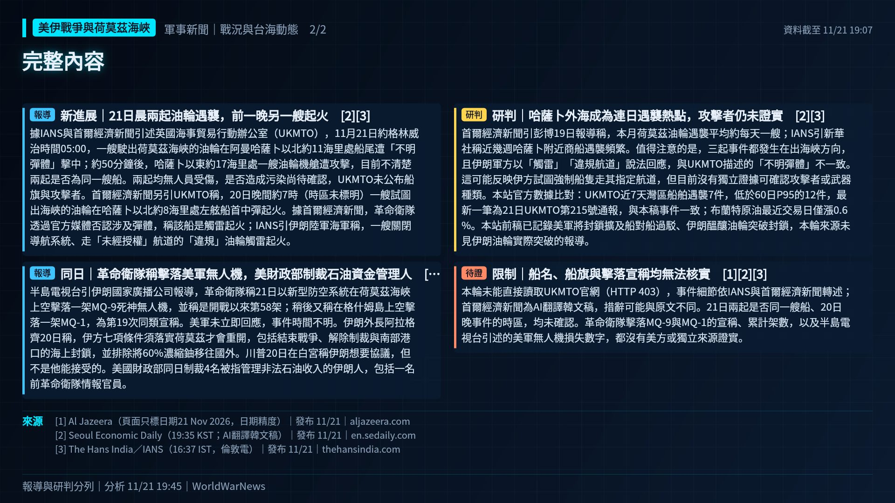

UKMTO：哈薩卜北方與東方21日晨50分鐘內兩起油輪遭不明彈體擊中、連兩日遇襲；革命衛隊稱擊落美軍MQ-9與MQ-1，美方未回應


報導新進展｜21日晨兩起油輪遇襲，前一晚另一艘起火
據IANS與首爾經濟新聞引述英國海事貿易行動辦公室（UKMTO），11月21日約格林威治時間05:00，一艘駛出荷莫茲海峽的油輪在阿曼哈薩卜以北約11海里處船尾遭「不明彈體」擊中；約50分鐘後，哈薩卜以東約17海里處一艘油輪機艙遭攻擊，目前不清楚兩起是否為同一艘船。兩起均無人員受傷，是否造成污染尚待確認，UKMTO未公布船旗與攻擊者。首爾經濟新聞另引UKMTO稱，20日晚間約7時（時區未標明）一艘試圖出海峽的油輪在哈薩卜以北約8海里處左舷船首中彈起火。據首爾經濟新聞，革命衛隊透過官方媒體否認涉及彈體，稱該船是觸雷起火；IANS引伊朗陸軍海軍稱，一艘關閉導航系統、走「未經授權」航道的「違規」油輪觸雷起火。
報導同日｜革命衛隊稱擊落美軍無人機，美財政部制裁石油資金管理人
半島電視台引伊朗國家廣播公司報導，革命衛隊稱21日以新型防空系統在荷莫茲海峽上空擊落一架MQ-9死神無人機，並稱是開戰以來第58架；稍後又稱在格什姆島上空擊落一架MQ-1，為第19次同類宣稱。美軍未立即回應，事件時間不明。伊朗外長阿拉格齊20日稱，伊方七項條件須落實荷莫茲才會重開，包括結束戰爭、解除制裁與南部港口的海上封鎖，並排除將60%濃縮鈾移往國外。川普20日在白宮稱伊朗想要協議，但不是他能接受的。美國財政部同日制裁4名被指管理非法石油收入的伊朗人，包括一名前革命衛隊情報官員。
研判研判｜哈薩卜外海成為連日遇襲熱點，攻擊者仍未證實
首爾經濟新聞引彭博19日報導稱，本月荷莫茲油輪遇襲平均約每天一艘；IANS引新華社稱近幾週哈薩卜附近商船遇襲頻繁。值得注意的是，三起事件都發生在出海峽方向，且伊朗軍方以「觸雷」「違規航道」說法回應，與UKMTO描述的「不明彈體」不一致。這可能反映伊方試圖強制船隻走其指定航道，但目前沒有獨立證據可確認攻擊者或武器種類。本站官方數據比對：UKMTO近7天灣區船舶遇襲7件，低於60日P95的12件，最新一筆為21日UKMTO第215號通報，與本稿事件一致；布蘭特原油最近交易日僅漲0.6%。本站前稿已記錄美軍將封鎖擴及船對船過駁、伊朗醞釀油輪突破封鎖，本輪來源未見伊朗油輪實際突破的報導。
待證限制｜船名、船旗與擊落宣稱均無法核實
本輪未能直接讀取UKMTO官網（HTTP 403），事件細節依IANS與首爾經濟新聞轉述；首爾經濟新聞為AI翻譯韓文稿，措辭可能與原文不同。21日兩起是否同一艘船、20日晚事件的時區，均未確認。革命衛隊擊落MQ-9與MQ-1的宣稱、累計架數，以及半島電視台引述的美軍無人機損失數字，都沒有美方或獨立來源證實。
- [1] Al Jazeera（頁面只標日期21 Nov 2026，日期精度）｜發布 11/21
- [2] Seoul Economic Daily（19:35 KST；AI翻譯韓文稿）｜發布 11/21
- [3] The Hans India／IANS（16:37 IST，倫敦電）｜發布 11/21